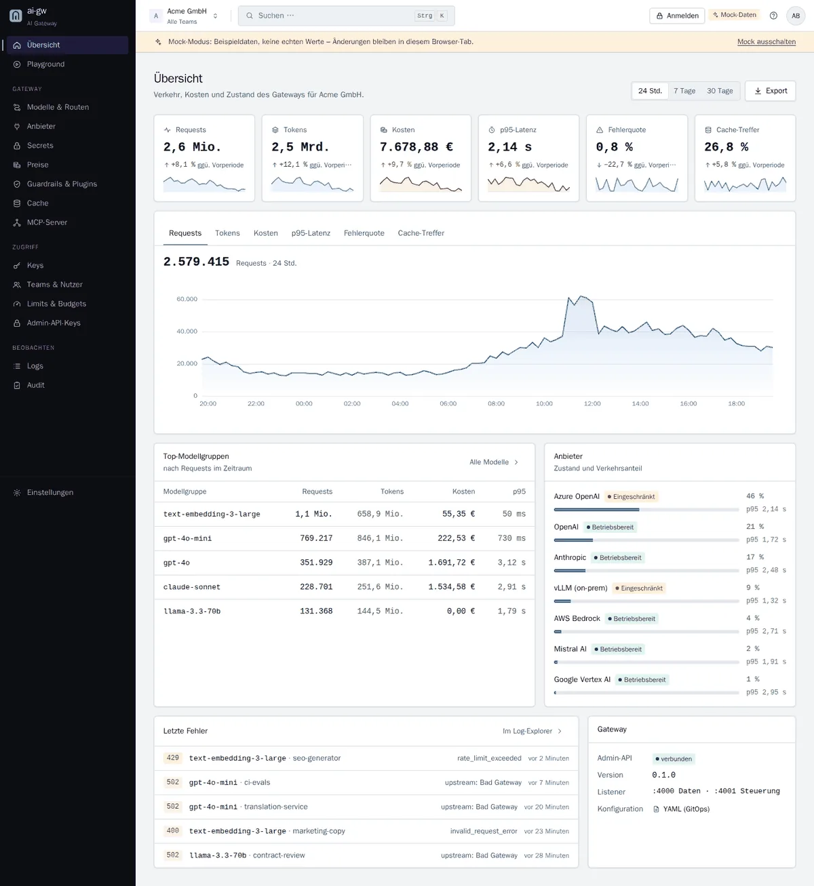
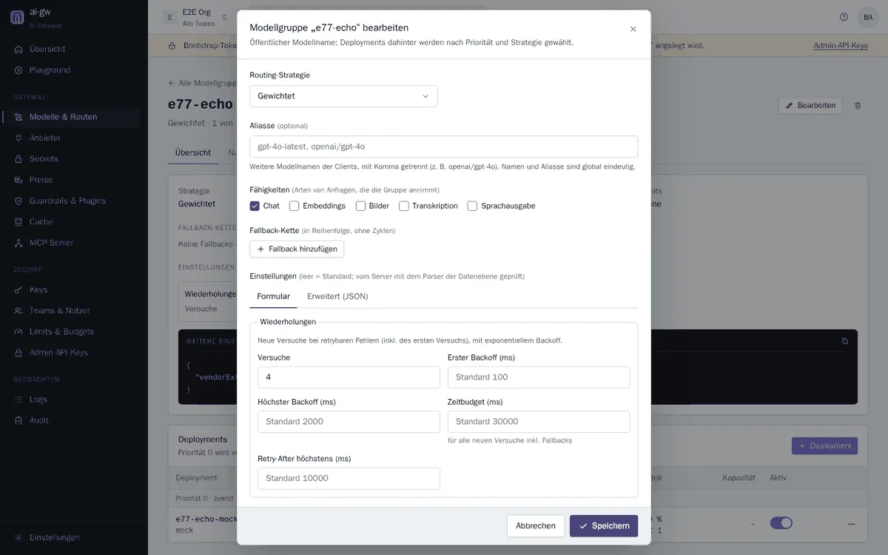
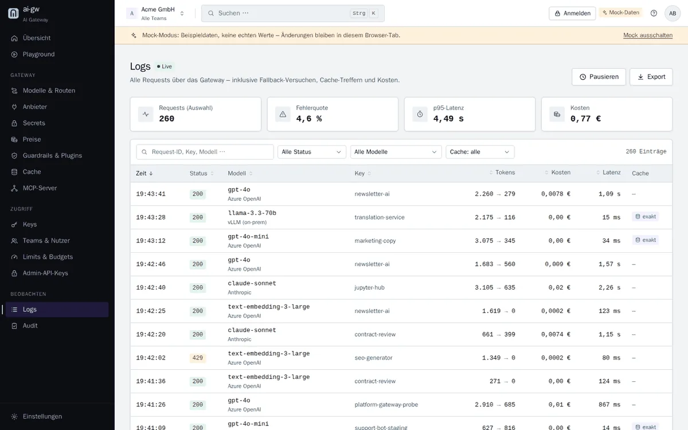
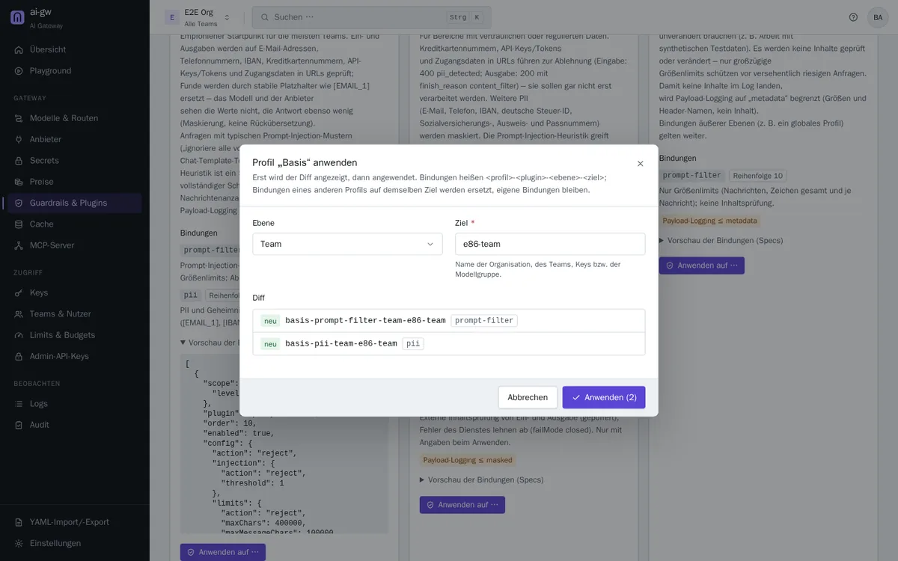
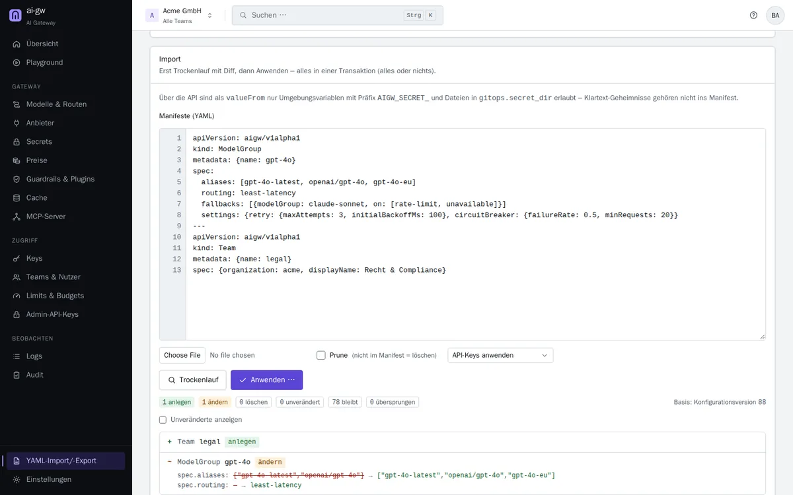
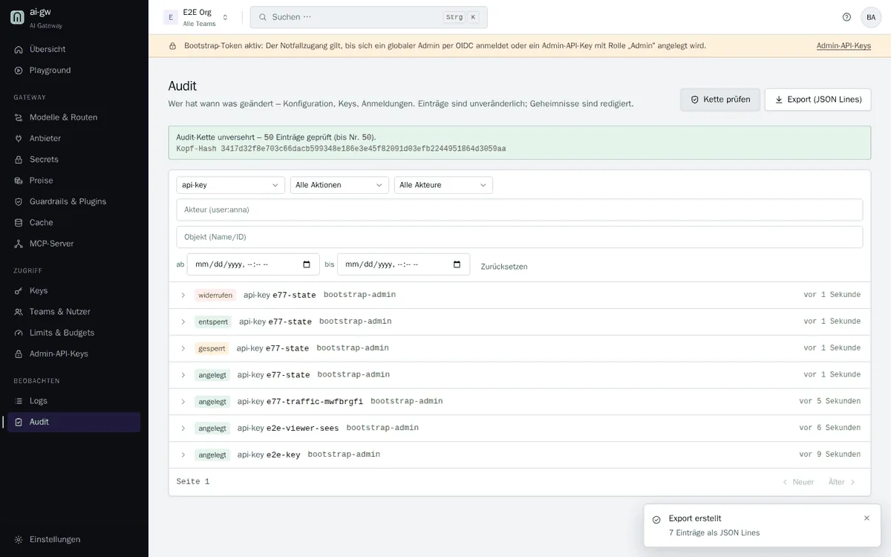

The admin UI is a Svelte 5 application embedded in the binary and served by the control plane (default port 4001, path /admin/). It uses only the public admin API – everything shown here also works via the API or as YAML. The screenshots come from the real UI; organizations, teams, keys and figures are fictitious sample or test data.
Pre-release – the UI may change. The screenshots show the state of development in November 2026. The UI is currently in German.
Overview#
Requests, tokens, cost, p95 latency, error rate and cache hits for the selected period, with a time series, top model groups, provider traffic share and health, and the latest errors.

Model groups and routing#
A model group is the public model name for clients. Behind it are deployments with priority, weight and capacity; fallback chain, retries and circuit breaker are configurable per group.


Keys#
Virtual API keys for applications, with team, allowed models, budget, rate limits, expiry and status. The plaintext is shown only once, on creation.

Log explorer#
Every request through the gateway – with model, provider, key, tokens, cost, latency, cache hits and fallback attempts. Content is stored only if configured, and then masked.

Guardrail profiles#
Profiles bundle recommended guardrail settings. Before applying one to an organization, team, key or model group, the UI shows which plugin bindings will be created or changed.

YAML import and audit#
Configuration can be exported as YAML manifests and applied again – first as a dry run with a diff, then in one transaction. Every change lands in the audit log, whose hash chain can be verified in the UI.


Command palette#
Ctrl+K jumps to pages, actions, models or keys – without leaving the keyboard.